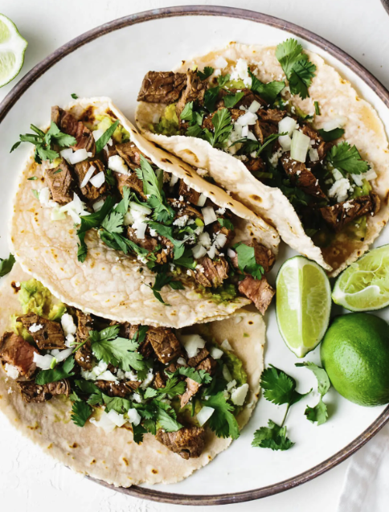

Carne Asada Tacos

Description
Carne asada tacos are delicious flank steak, Mexican-inspired street tacos! Just load up your tortilla with
juicy steak bites, avocado, onion, cotija cheese, and fresh cilantro.
Ingredients
- Carne Asada: I typically use flank steak when making carne asada, but skirt steak works as well.
Make sure to read my carne asada recipe for tips and specifics on grilling the perfect steak!
- Avocado: I smashed plain avocado into the tortilla, but you could use guacamole as well.
- Onion: Diced yellow, white, or red onions will work.
- Lime: A squeeze of fresh lime juice is a must!
- Cilantro: You can never go wrong with a sprinkle of fresh cilantro.
- Cheese: Cotija cheese is always my go-to for Mexican tacos.
- Tortillas: Corn tortillas or flour tortillas, it's up to you.
Step-By-Step
- Grill the carne asada until it's cooked to your preference. Slice it against the grain, then chop it into small pieces.
- Use a spoon to mash the avocado and spread a large spoonful or two onto each tortilla. Then, top the avocado with chopped
carne asada, a sprinkle of cotija cheese, some diced onion and fresh cilantro. Squeeze fresh lime juice on top.